← 返回阅读库 · 原论文目录
论文讲解阅读文档 · 多模态语言模型 · v029
Representation Learning via Global Temporal Alignment and Cycle-Consistency
视频时长 00:14:29；讲解文字 5,902 字符；提取讲解画面 39 张。按视频原顺序阅读，每段文字保留时间戳。
文字来自整段视频的自动语音转写，按自然停顿分段，并与 PPT / 论文页面 / 演示画面对齐。未将讲解压缩为摘要；术语、数字和口述公式请结合画面及原论文核对。 阅读稿已校正规范部分明确术语误识别；原始逐字稿和每处修改记录另行保留。
讲解画面为源视频截图（640×360），不是可编辑 PPT 文件。全片按每秒 2 帧扫描内容变化，逐步展开页保留；连续动画保留代表画面。清晰度受源视频限制。
下载完整资料包 · 含离线 HTML、PDF、Word、全部 PPT 画面和字幕。
原论文与材料
Representation Learning via Global Temporal Alignment and Cycle-Consistency · 下载完整 PDF（14 页）
按时间阅读
00:00:00–00:00:55 · 画面 001
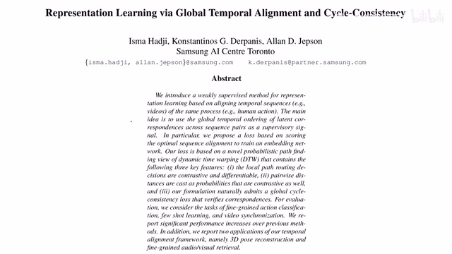
00:00:00–00:00:55 · 画面 001大家好啊，今天我们来迅速说一篇论文，Representation Learning via Global Temporal Alignment and Cycle Consistency。那么这篇论文呢，跟我们上一期介绍的 Learning by Aligning Video in Time LAV 一篇论文呢，它的原理呢是高度一致的，都是呢想通过对齐两个视频序列它们的语义的信息来实现帮助我们学到一个更好的 Representation。但是呢，这两个论文呢使用的是截然不同的这个 Loss。
那么我们在今天的视频中呢，不仅会介绍这篇论文，还会对比一下这篇论文跟前面 LAV 的他们的区别。那么更巧的是呢，这两份论文呢出现在这个今年的 CVPR 的同一个 paper session 里面。因为之前的很多的基础的知识呢，我在这个 LAV 里面已经讲过了。那么如果你感觉观看这个视频有困难呢，建议先从 LAV 开始。那么我们下面来具体介绍这篇论文。
00:00:55–00:01:24 · 画面 002
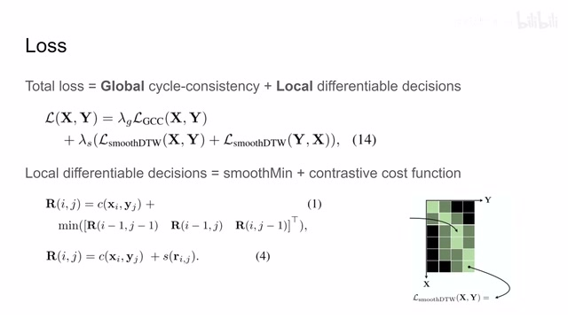
00:00:55–00:01:24 · 画面 002我们知道这两篇论文的构架都是把我们的两个视频系列送到 image encoder 里面，然后在这个 embedding space 里面进行各种各样的操作，让两个视频能够在语义上进行对应。比如说，两个人不同的打高尔夫球的视频，那么我能不能在他们挥杆的每一个阶段让这个视频能够一一对应。这个任务就用来帮助我们学习更好的 representation。那么直接看到本文的到此。
本文的 Loss 呢包括一个 Global Consistency Loss 还有这个 Local Differentiable 的这个 Loss。而这个 Local Differentiable 的这个 Loss 呢可以继续进行拆分。那么它有两项，一个叫做 Smooth Minimize，另一项的 Contrastive Cost Function。所以呢，这篇论文的 Loss 呢主要就包括这个 GCCSmooth Minimize 和这个 Contrastive Cost Function。那么下面呢，我们就逐个介绍它们每一项的 Loss 具体是什么。那么其次呢，为什么要设计这样一个 Loss。
00:01:24–00:01:25 · 画面 003
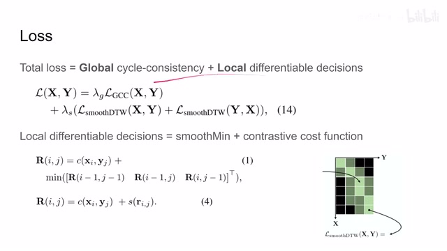
00:01:24–00:01:25 · 画面 00300:01:25–00:01:52 · 画面 004
00:01:25–00:01:52 · 画面 00400:01:52–00:02:16 · 画面 005
00:01:52–00:02:16 · 画面 005那么首先这个 video elements 对吧，正如我们之前在 LAV 讲的很成熟的方法 DTW。但是呢，DTW 呢在实现的时候呢它存在一个致命的问题，那就是我中间是要有这个 minimize 的。而 minimize 这个操作呢它是不可以求导的。那么为了解决这个问题呢，在 LAV 中呢它使用了前人提出的这个 minimize power gamma 这样一个设计。那么它的具体的 loss function 呢，当这个 gamma 大于 0 的时候呢我们主要看这里啊。
00:02:16–00:02:22 · 画面 006
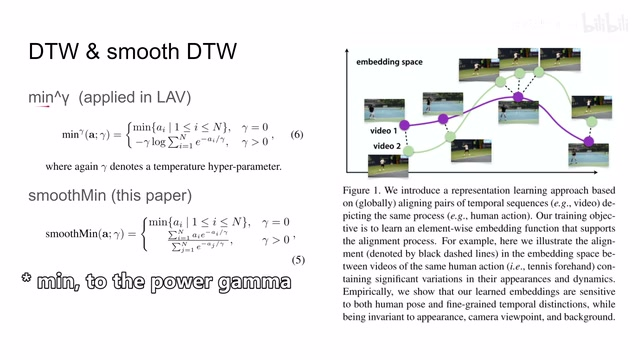
00:02:16–00:02:22 · 画面 00600:02:22–00:02:49 · 画面 007
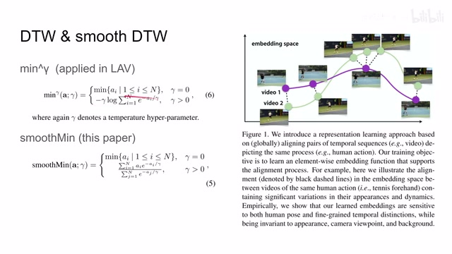
00:02:22–00:02:49 · 画面 007就是把我这一组需要求最小值的这一组数呢来先给它求到这个指数，然后呢再求对数给它求过来。这样一转换之后呢，我们的这个值呢就尽量接近了这个其中最小的值。这是一个很经典的设计。那么在本文中呢，作者基于一些后面我们马上会提到理由，他呢对这个 minimize 呢进行了一个替换，提出了一个叫做 smooth minimize。那么他的公式呢，我们叫这个γ等于 0 跟之前一样。
00:02:49–00:03:05 · 画面 008
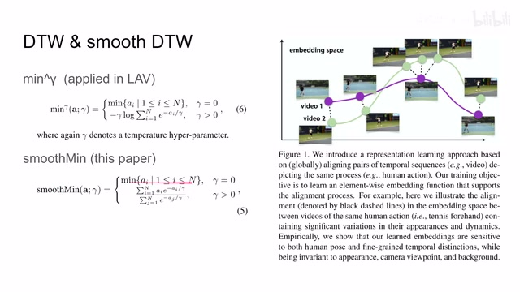
00:02:49–00:03:05 · 画面 008是长这个样子，它实际上是求的是这一组里面所有的元素的这么一个加权的平均和。而这个权重大小本身就跟这个值它自己的大小相关。那么为什么我们要设计一个形容这样的一个式子呢？那么我们来看到这里这里，你看到作者画出了一条曲线。首先它的 y 轴的意思就是经过我这种各种 minimize 的操作之后。
00:03:05–00:03:08 · 画面 009
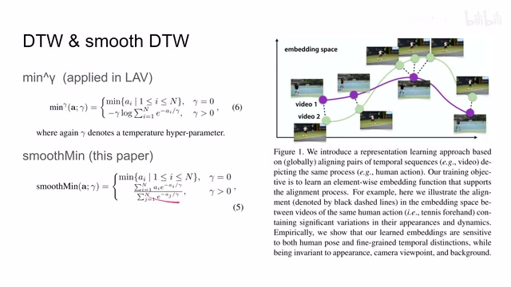
00:03:05–00:03:08 · 画面 00900:03:08–00:04:07 · 画面 010
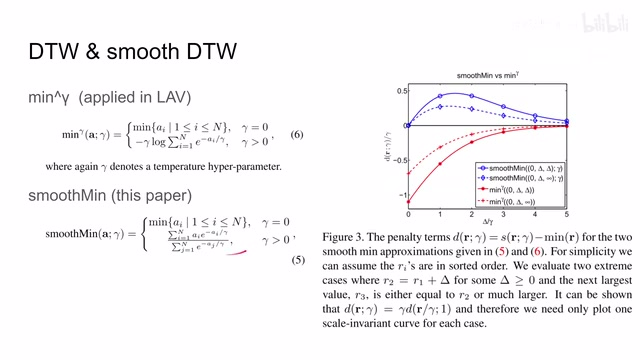
00:03:08–00:04:07 · 画面 010它得出来的值和我真实的最小值它的差，这个差呢叫做 dr 伽马。然后呢把这个差再除上这个伽马，相当于把大家都统一到同一个尺度上来。那么更具体的配置呢，我们来看，因为呢我们在这个 dtw 时候做动态规划的时候就是要做三个值在他们三个值当中找到最小。那这里呢，作者就假设我因为现在有三个值，那这里呢作者就假设我现在有三个值。它第一种配置是第一个值是 0，第二个值是Δ，第三个值是Δ，那么Δ都比 0 要大。那么这种情况下是第二个值和第三个值它们的值是相等的。那么第二种情况是第一个值是 0，第二个值是Δ，第三个是正无穷，是非常大的一个值。
那么这个表就表示这两种配置情况下我这两个 minimize loss 的方法相对于真正的最小值它们的差，可以看到我们之前使用 minimize power gamma 的方法在 delta 很小的时候，它得到 minimize 的值跟真实的值差别是很大的，而且你 delta 越小它就差别越大，而对于本文提出的方法，它的差值始终在一定的范围里面，而且无论你栏目的大小
00:04:07–00:04:08 · 画面 011
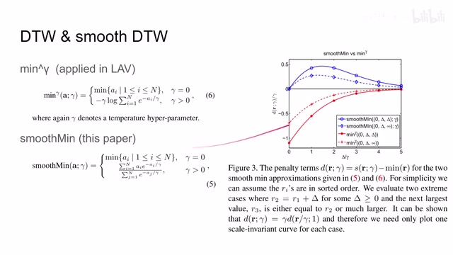
00:04:07–00:04:08 · 画面 01100:04:08–00:04:47 · 画面 012
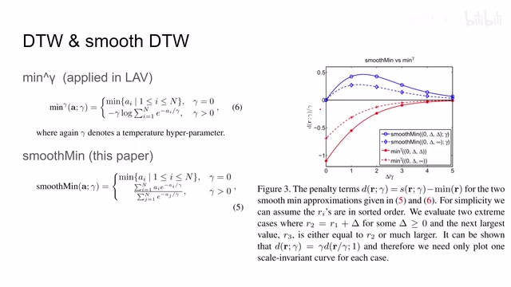
00:04:08–00:04:47 · 画面 012它在两头的这个误差呢是相对比较低的，那这其实就给我们提供了一个挺好的性质。那么关于这点的详细论述呢，作者在他后面的附录里面有介绍，感兴趣的朋友呢可以去附录里面查看。那么这个呢就是作者进行的第一个改动，那么然后呢我们来看到这个 contrastive cost 方式。那么正如我们 LAV 中提到的，那如果说我们单纯的只是让这个两个视频的 image embedding
00:04:47–00:05:32 · 画面 013
00:04:47–00:05:32 · 画面 013给他相互接近的话，那最简单的模型呢就坍塌了，就是大家都把所有的这个图像都投射到一个点那就好了嘛，对吧，那因此呢在这里呢我们需要有一个 contrastive loss，那让这个各个 representation 各个 embedding 呢给他们相互分开，只有相互分开呢我们才会做这件事情的意义，让我们 representation 呢能够描述我们视频内容的变化那么这里呢作者就把我们的这个得到的 image embedding 呢做这个 L2 normalization，然后呢构建起了一个这个 cross entropy 这个 loss，那么我们具体来看，那假如说第一个视频里面的这个 xi 这一帧它跟这个第二个视频里面这个 yj 这一帧它们是一一对应的，xy 呢是不同的视频，ij 呢是不同的这个 index，那上面这个 telda 呢意思是经过这个 L2 normalization
00:05:32–00:05:33 · 画面 014
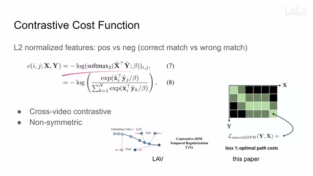
00:05:32–00:05:33 · 画面 01400:05:33–00:07:33 · 画面 015
00:05:33–00:07:33 · 画面 015那我把这两个向量他们做过归一化之后呢，他们做内积，那就可以反映他们这两个向量的这个相似的程度嘛，那这里这个 temperature 对吧，然后就是一个 cross entropy 的这样一个架构，那么关于这个 cross entropy 的使用呢，分子上是我们已知的他们正确的这个帧的配对，那么分母上呢就是 xi 这一帧对 y 这个视频的序列中的所有的帧他们配对的这个相似程度那么你就可以把它理解成一个多分类问题，就是我现在有一针叫做 XI，它应该被分类为 Y 中的哪一个针呢？对吧，它就是一个多分类的问题。而这个 cross entropy loss 呢就保证我们多分类问题它最后出来的这个分布的结果呢是一个 winner take all 赢家通吃。也就是说呢，我正确的匹配，我希望它的分布呢就是高高的
那么其他不正确的匹配呢，我希望它们的相关性呢就很小，那么对比一下这个 LAV 中它们呢使用的是这个 Time Contrastive 也就是有一个时间窗，这个时间窗内的相互这个时间窗外的呢相互远离，那么对比 LAV 这个 Loss 呢，LAV 呢只把这个 Loss 呢应用在单个的这个视频里面，而本文这个 Contrastive Loss 呢是要应用在两个不同的视频里面的，这个呢是它们很显著的一个区别那么同时既然它是一个 cross entropy 而且你把它理解为一个多分类问题的话，那我从 X 去寻找 Y 的匹配和从 Y 寻找 X 的匹配那它肯定这两个 loss 是不一样的，你分类的可用的选项都不一样，所以它是一个 loss 是一个非对称的这样一个 loss
那这也就意味着呢，我在真正做这个漏子的时候呢，既要有从 x 到 y 的这样一个漏子，又要从 y 到 x 的这样一个漏子，那么现在呢我们就可以把这个 dtw 这一块的这个漏子这个是 local 他们相互卖时间的漏子呢给它组合起来了，这个呢叫做 smooth dtw，那么可以看到呢，我们的这个既然要做 dtw 呢肯定要有一个矩阵，这个矩阵描述的就是那么这个矩阵应该描述就是我两个视频中他们两个图像
00:07:33–00:07:39 · 画面 016
00:07:33–00:07:39 · 画面 01600:07:39–00:08:15 · 画面 017
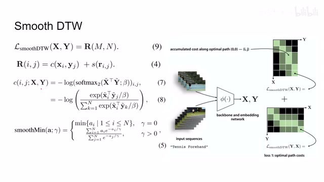
00:07:39–00:08:15 · 画面 017这个 match 的这个 cost 吗？这里呢，他把这个 cost 呢直接定义成这个 r，这个 m 呢是 x 的长度，n 呢是 y 的这个视频的长度。那么这个 r 呢就包括我们刚才讲的这个 contrastive loss，还有这个 smooth minimized contrastive loss 呢是这样的。这 smooth minimized 呢是这个样子，那么你把这些加起来呢就构成我们最终要交给 dtw 的这样一个 cost matrix。
00:08:15–00:08:16 · 画面 018
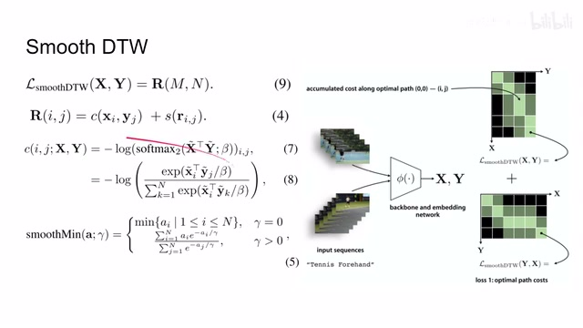
00:08:15–00:08:16 · 画面 01800:08:16–00:08:41 · 画面 019
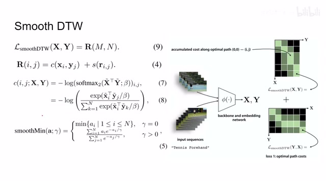
00:08:16–00:08:41 · 画面 019那么对比一下现在 LAV 里面呢，它用的就是单纯的这个 L2 distance。那么同时正如我们之前提到的，这个 contrast loss 呢它是一个非对称的，也就是说呢，从 X 到 Y，从 Y 到 X 呢是不一样的。这样呢就会导致我们产生两个匹配，也就是说实际上我们会有两个这个 cost matrix，那一个是从 X 匹配到 Y，另一个是从 Y 匹配到 X。那么它们呢会分别独立的给出一种这个匹配的结果
00:08:41–00:08:42 · 画面 020
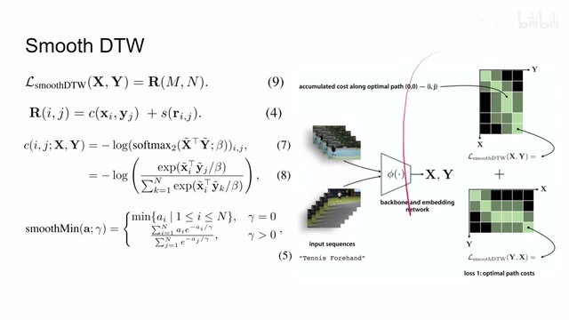
00:08:41–00:08:42 · 画面 02000:08:42–00:08:55 · 画面 021
00:08:42–00:08:55 · 画面 021就双向选择嘛那说到双向选择呢这里打个叉因为这让我想起了我的一个朋友我们呢都敬称他于老师于老师呢是一个心思非常细腻的人他这个心地善良是有求必应做事体贴非常照顾别人的感受那这么说有一天这个家里人让他去相亲于老师呢就想这才刚失恋十年啊我这不能去啊
00:08:55–00:09:01 · 画面 022
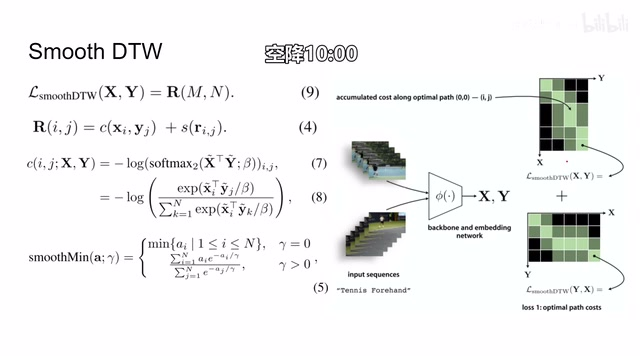
00:08:55–00:09:01 · 画面 02200:09:01–00:10:27 · 画面 023
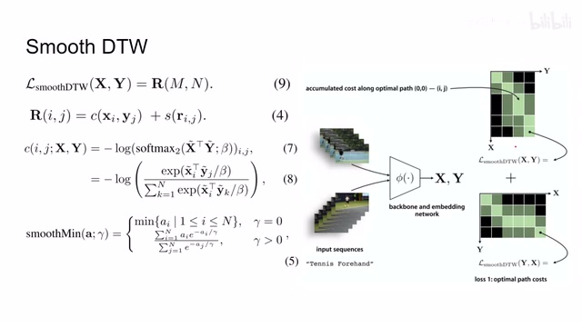
00:09:01–00:10:27 · 画面 023但是呢，家里人感受在照顾对不对？李老师呢还是说得去。但是这个去呢，他其实有风险。你想，于老师这个这么体贴的一个人，万一这个对面的姑娘，相亲的姑娘真的看上了他，这不耽误人家姑娘吗？于是呢，那天他就过来问我说这个事情该怎么办，能够让对方对我产生一种不太好的印象，这样子呢，以达到这个违反的拒绝人家的目的。哎呀，这个问题真是太困难了。我想了又想，于老师啊，你就正常表现那这撑远了。那我们继续啊。那既然我们现在有了两套匹配，那么在最理想的情况下，那当然这个两个匹配一致，大家情投意合，这是最好的。但是真实的世界呢，往往就是你这边的一个匹配结果呢跟这边呢就不太一样。这就像报道部的偏差，未经确认的东西你又说了一遍。
等于等于你也有责任了，对吧？那么为了避免这种尴尬呢，这个减少这种责任呢，这里呢作者就设计了这个 global cycle consistency 这样一个 loss。他的意思呢就是啊，报道不能有偏差，我们的两个匹配的 results 呢要尽量的接近。那么我们下面继续来看作者的设计。那首先呢我们看到这个场合呢是这个从 y 匹配到 x，那这个场合呢是从 x 匹配到 y。
00:10:27–00:10:59 · 画面 024
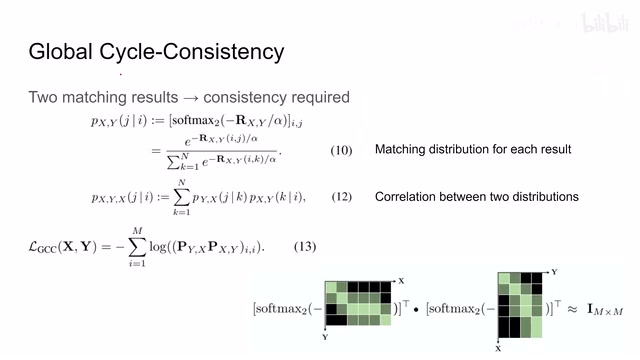
00:10:27–00:10:59 · 画面 024那它们是过了这个 softmax 做 transpose 的。这里呢我们先不管这个 softmax，不管这个 transpose，我们它们相乘起来。所以呢其实就是这一行乘上对应的这一列得到一个值。这样子呢，因为我们的 x 呢它的长度呢是 m，这边呢它的宽度呢也是 m。那这样子呢，我们就应该得到一个 m 乘 m 的这样一个矩阵。那么我们再继续来看这个里面的这个式子，它到底是什么意思呢？
00:10:59–00:11:00 · 画面 025
00:10:59–00:11:00 · 画面 02500:11:00–00:11:55 · 画面 026
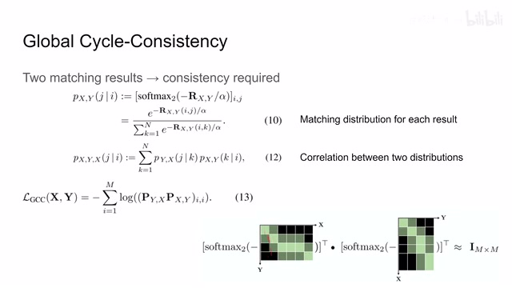
00:11:00–00:11:55 · 画面 026那么以 D 行为例，那么 D 行呢它存储的数据呢其实就是 X 的视频中第一帧对于 Y 它的每一帧它的匹配的程度。那么它呢就存成一行。你把它过了一个 softmax 之后呢，它呢就变成了一个概率。这个概率呢相当于第一个匹配中我 X 的第一帧去匹配 Y 的所有帧它得到一个概率分布。那么同理呢，我们看到这里 J 呢它的第一列。
这结果呢也是我的这个 x 它的第一针跟 y 这个它的相似程度。然后呢把它变成一个 probability distribution 概率的分布。那我把这两个概率分布它们的对应位置的元素相乘起来，其实呢就是在求这两个概率分布的 correlation 就是它们一个相关性。那么在这里呢，我们希望这个两个预测的结果它们能够尽量保持一致，这也就意味着。
00:11:55–00:11:56 · 画面 027
00:11:55–00:11:56 · 画面 02700:11:56–00:12:46 · 画面 028
00:11:56–00:12:46 · 画面 028对于 X 这个视频它的每一帧，我希望它预测出的 distribution 在这两个结果中保持一致。而且我们只关心同一帧在这两个不同的结果里面它所对应的 distribution 产生的相关性的大小。我们并不会在意说不同的两帧它产生的 distribution 它们的相似程度。所以这里我们虽然乘出来是一个 M 乘 M 的矩阵。
但是呢我只需要计算它对角线上的 m 个元素就可以了。那么这个思想呢就是这个 jcc 它这个 loss 的构建方法。你看呢首先它是对这个木 log 求和嘛。这是 m 个元素，m 呢对应的是视频 x 的长度嘛。也就是说视频 x 有 m 帧。那么对于每一帧呢我们计算什么呢？这个 log 里面呢就是这个 pyx 和这个 pxy。那么它呢就是从 y 匹配到 x。那么它呢是从 x 匹配到 y。
00:12:46–00:12:47 · 画面 029
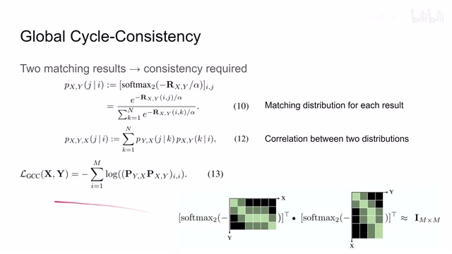
00:12:46–00:12:47 · 画面 02900:12:47–00:13:28 · 画面 030
00:12:47–00:13:28 · 画面 030这样子。也就是说我同一针在两个不同的结果里面去匹配对面的视频的所有针产生的 distribution。我希望这两个 distribution 尽量的接近。也就是说他们两个的 correlation 尽量的高。那么这个就是一个 cycle consistency。那么以上就是本文最核心的 loss 的构成了。快速的回顾一下作者用了两个改进帮我们提出的 smooth dtw 做 dtw 。dtw 有两个 results。我们为了把这两个 results 给它统一起来。
00:13:28–00:13:43 · 画面 031
00:13:28–00:13:43 · 画面 031用了 global cycle consistency 这样一个 loss，下面我们就可以看到作者进行了一些实验。首先是作者使用的数据集跟 rvv 略有不同，回报的评价手段也是非常接近。首先这里有 evolution，我是应该用什么样的 loss 配置比较好？显然 contrastive cost 加上 gcc 加起来是最后的，直接来看到最终的结果，这里是
00:13:43–00:13:44 · 画面 032
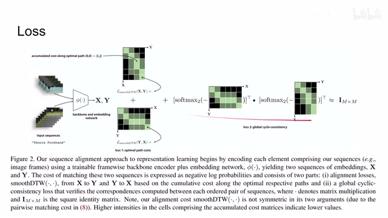
00:13:43–00:13:44 · 画面 03200:13:44–00:13:46 · 画面 033
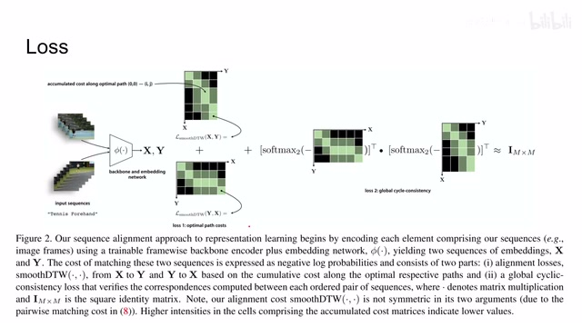
00:13:44–00:13:46 · 画面 03300:13:46–00:14:04 · 画面 034
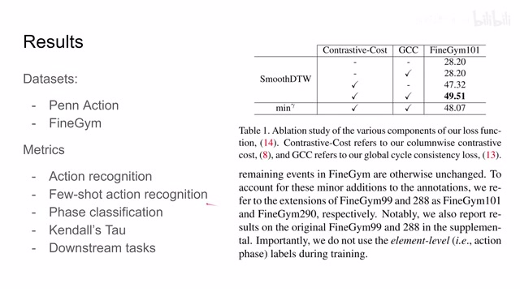
00:13:46–00:14:04 · 画面 03400:14:04–00:14:11 · 画面 035
00:14:04–00:14:11 · 画面 035直接训练和这个在 AVGNet 上 Pretrain 之后再做 fine-tune 得到这个动作识别的这样一个结果。那这边呢还有这个 Future Alerting 还有这个 Face Classification 等等这一系列任务的物资。那么如果你感兴趣的话呢，非常推荐你去原文仔细查看它的实验的配置。那么以上呢就是我对这篇论文的简单的分析，那么感谢您的收看，再见
00:14:11–00:14:13 · 画面 036
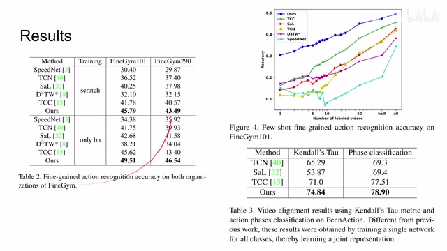
00:14:11–00:14:13 · 画面 03600:14:13–00:14:19 · 画面 037
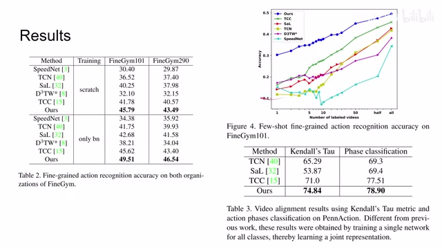
00:14:13–00:14:19 · 画面 03700:14:19–00:14:24 · 画面 038
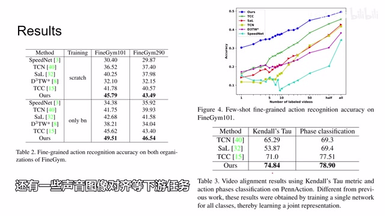
00:14:19–00:14:24 · 画面 03800:14:24–00:14:29 · 画面 039
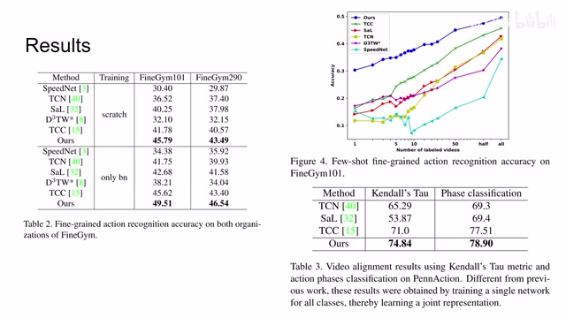
00:14:24–00:14:29 · 画面 039转写与来源说明 · 0 个自动复核提示
保留 32 个原始语音片段，0 个片段触发自动复核提示。提示仅用于定位可能的术语、重复或识别问题，不等于已确认错误。
讲解画面为源视频截图（640×360），不是可编辑 PPT 文件。全片按每秒 2 帧扫描内容变化，逐步展开页保留；连续动画保留代表画面。清晰度受源视频限制。
原视频：paper/合集_2026-10-16_多模态语言模型/[论文简析]Representation Learning via Global Temporal Alignment and ...[2105.05217].mp4
SHA-256：1b4579ceac78b51890c44cffa8c59808d237b509e5bbafdd72c86930ded70867
全文按视频语音与画面制作。原论文可从上方链接下载；完整资料包保留全文、原始逐字稿、字幕和校对记录。